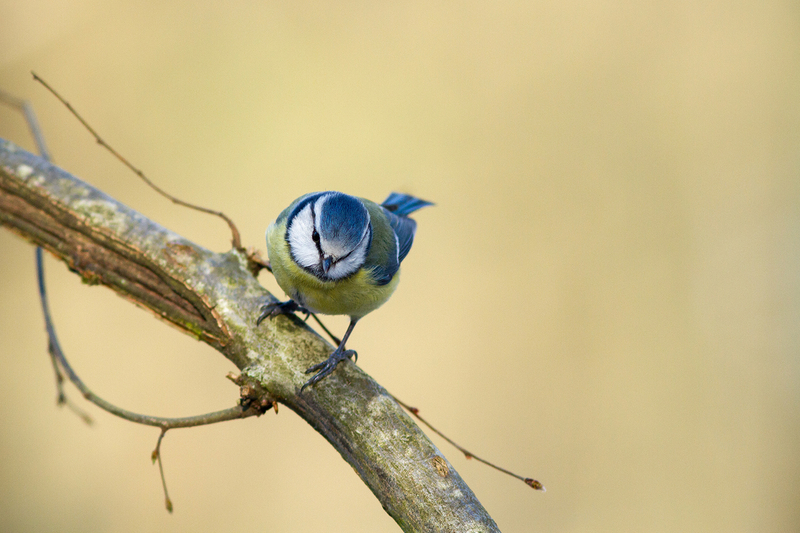
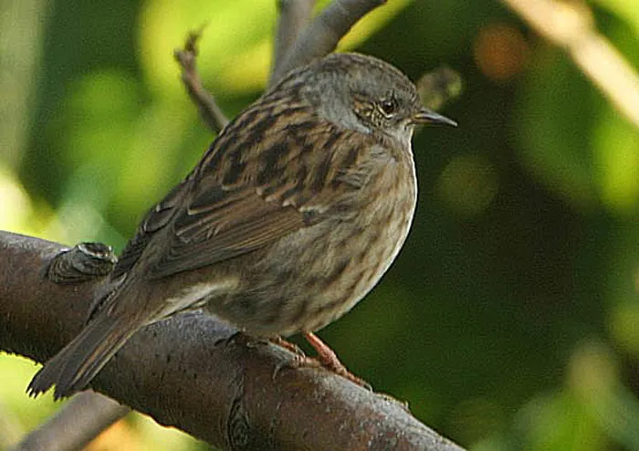
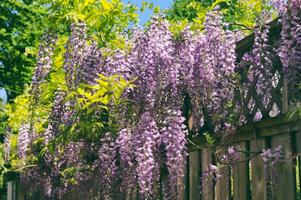
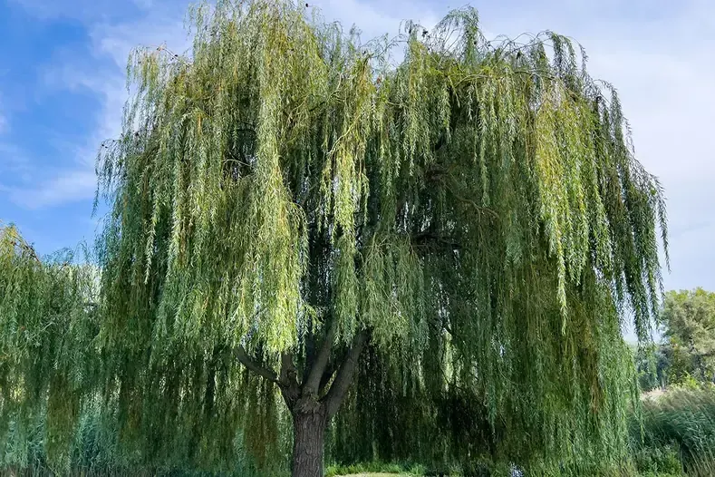
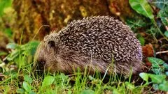

<!DOCTYPE html>
<html>
<head>
    <title>Carte parcours Colombes</title>
    <meta charset="utf-8" />
    <meta name="viewport" content="width=device-width, initial-scale=1.0">

    <!-- Leaflet -->
    <link rel="stylesheet" href="https://unpkg.com/leaflet@1.9.4/dist/leaflet.css"/>

    <style>
        #map { height: 100vh; }
        .label {
            background: transparent;
            border: none;
            color: green;
            font-weight: bold;
        }
        .popup-title {
            font-weight: bold;
            font-size: 14px;
        }
	.popup-img {
    width: 150px;
    border-radius: 10px;
    margin-top: 5px;
}
        button {
            margin: 5px;
            padding: 5px 10px;
            cursor: pointer;
        }
    </style>
</head>
<body>

<div id="map"></div>

<script src="https://unpkg.com/leaflet@1.9.4/dist/leaflet.js"></script>

<script>

//  Carte centrée sur Colombes
var map = L.map('map').setView([48.9235, 2.2550], 14);

L.tileLayer('https://{s}.basemaps.cartocdn.com/light_all/{z}/{x}/{y}{r}.png', {
    attribution: '&copy; OpenStreetMap &copy; CartoDB'
}).addTo(map);

//  Géolocalisation utilisateur
map.locate({setView: false, maxZoom: 16});

map.on('locationfound', function(e) {
    L.marker(e.latlng).addTo(map)
        .bindPopup("Tu es ici 📍")
        .openPopup();
});
// ====================== SLIDER POPUP ======================

// données slider
var sliderData = [
    {
        src: "images/coquelicot.jpg",
        caption: "Le coquelicot : fleur sauvage."
    },
    {
        src: "images/rosier.jpg",
        caption: "Le rosier : attention aux épines."
    },
    {
        src: "images/gendarmes.jpg",
        caption: "Le gendarme : insecte commun attention où vous marchez."
    }
];

var currentIndex = 0;

// update affichage
function updatePopup() {
    var img = document.getElementById("popupImage");
    var caption = document.getElementById("caption");

    if (img && caption) {
        img.src = sliderData[currentIndex].src;
        caption.innerText = sliderData[currentIndex].caption;
    }
}

function nextImage() {
    currentIndex = (currentIndex + 1) % sliderData.length;
    updatePopup();
}

function prevImage() {
    currentIndex = (currentIndex - 1 + sliderData.length) % sliderData.length;
    updatePopup();
}

// reset à chaque ouverture de popup
map.on('popupopen', function () {
    currentIndex = 0;
    updatePopup();
});

// ====================== ICONES ======================
var iconPlante = L.divIcon({ className: '', html: "🌿", iconSize: [20, 20] });
var iconInsecte = L.divIcon({ className: '', html: "🐝", iconSize: [20, 20] });
var iconOiseau = L.divIcon({ className: '', html: "🦆", iconSize: [20, 20] });
var iconAnimal = L.divIcon({ className: '', html: "🦔", iconSize: [20, 20] });
var iconMix = L.divIcon({ className: '',html: "🌿🐝",iconSize: [30, 20]});
// 🟢 CHEMIN 1 - Parcours oiseaux
var chemin1 = [
    [48.9255, 2.2564],
    [48.9239, 2.2558],
    [48.9237, 2.2582],
    [48.9255, 2.2564]
];

L.polyline(chemin1, {color: 'green'}).addTo(map)
    .bindPopup("Parcours Oiseaux ");

L.marker([48.9245, 2.2570], {
    icon: L.divIcon({
        className: 'label',
        html: "Parcours Oiseaux ",
        iconSize: [120, 20]
    })
}).addTo(map);

//  Points biodiversité chemin 1
L.marker([48.9255, 2.2564], {icon: iconOiseau}).addTo(map)
    .bindPopup(`
	 <div style="text-align:center;">
        <h3>🦆 Mésange bleu</h3>
        <br>
        <p>Regardez dans les arbres autour de vous. Vous pourriez trouvez des mésanges bleues.</p>
    </div>
`);

L.marker([48.9239, 2.2558], {icon: iconOiseau}).addTo(map)
    .bindPopup(`
	 <div style="text-align:center;">
        <h3>🦆 Accenteur Mouchet</h3>
        <br>
        <p>Regardez dans les haies et au sol autour de vous. Vous pourriez trouvez des accenteur mouchet.</p>
    </div>
`);

L.marker([48.9237, 2.2582], {icon: iconPlante}).addTo(map)
    .bindPopup(`
	 <div style="text-align:center;">
        <h3>🌿 Glycines</h3>
        <br>
        <p>Regardez sur les portails dans la rue, vous pourriez apercevoir des glycines qui poussent en s'accrochant aux portiques.</p>
    </div>
`);
// 🟢 CHEMIN 2 - Parcours mairie et alentours
var chemin2 = [
    [48.9230, 2.2561],
    [48.9231, 2.2526],
    [48.9228, 2.2528],
    [48.9230, 2.2540],
    [48.9221, 2.2540],
    [48.9220, 2.2547],
    [48.9229, 2.2548],
    [48.9230, 2.2561]

];

L.polyline(chemin2, {color: 'green'}).addTo(map)
    .bindPopup("Parcours Mairie ");

L.marker([48.9220, 2.2540], {
    icon: L.divIcon({
        className: 'label',
        html: "Parcours mairie ",
        iconSize: [120, 20]
    })
}).addTo(map);


L.marker([48.9230, 2.2561], {icon: iconPlante}).addTo(map)
    .bindPopup(`
	 <div style="text-align:center;">
        <h3>🌿 Glycine</h3>
        <br>
        <p>Regardez sur les portails dans la rue, vous pourriez apercevoir des glycines qui poussent en s'accrochant aux portiques.</p>
    </div>
`);

L.marker([48.9231, 2.2545], {icon: iconPlante}).addTo(map)
    .bindPopup(`
	 <div style="text-align:center;">
        <h3>🌿 Coquelicot</h3>
        <br>
        <p>Regardez sur l'espace fleurs.</p>
    </div>
`);
L.marker([48.9225, 2.2545], {icon: iconPlante}).addTo(map)
    .bindPopup(`
	 <div style="text-align:center;">
        <h3>🌿 Saule pleureur </h3>
        <br>
        <p>Les saules pleureurs poussent au bord des points d'eau.</p>
    </div>
`);
L.marker([48.9230, 2.2530], {icon: iconAnimal}).addTo(map)
    .bindPopup(`
	 <div style="text-align:center;">
        <h3>🦔 Hérisson</h3>
        <br>
        <p>Regardez dans les buissons et les haies, de petits mammifères pourraient s'y être installés (ne les touchez pas svp)<p>
    </div>
`);

L.marker([48.9222, 2.2545], {icon: iconMix}).addTo(map)
.bindPopup(`
    <div style="text-align:center; width:180px;">
        <h3>🌿🐝 Plantes et insectes</h3>

        <p id="caption">Le jardin de la mairie grouille de vie</p>

        

        <br>

        <button onclick="prevImage()">◀</button>
        <button onclick="nextImage()">▶</button>
    </div>
`);
</script>

</body>
</html>